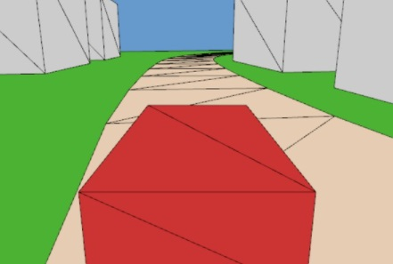

Renderer.car.frame to replace the white triangle with the car you modeled in code1_transformations
implement the chase camera> The chase camera is camera that follows the car from behind and slightly above, as shown in the figure. You need to define this camera in the object frame of the car and then transform it into world space. Then you only need to setup the view matrix with the resulting camera. The numbers shown in the illustration below are justs example, place you chase camera where you like
